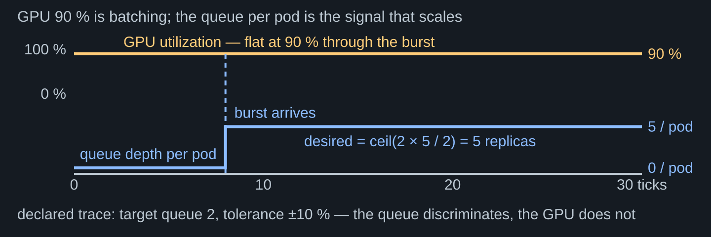

One pod, many clients —
and the HPAОдин под, много клиентов —
и HPA
The controller that sizes the declared fleet — and the signal that does not lie.
Контроллер размера заявленного флота — и сигнал, который не лжёт.
Where Topic 11 left us
Где нас оставила тема 11
Topic 12Тема 12The fleet is declared
Pods carry the ledger, probes budget the boot, releases are versioned history. One number is still human: how many replicas? A static answer is wrong in both directions — idle GPUs burn money, and a burst is real (T08: 24 arrivals met an envelope built for 8 — 16 honest 429s).
Флот заявлен
Поды несут ведомость, пробы бюджят загрузку, релизы — версионируемая история. Одно число всё ещё человек: сколько реплик? Статичный ответ ошибается в обе стороны — простаивающие GPU жгут деньги, а бурст настоящий (T08: 24 пришельцев против конверта на 8 — 16 честных 429).
Enter the controller
The HorizontalPodAutoscaler closes the loop: read a metric, compute desired = ceil(replicas × metric / target), clamp to [min, max]. One formula, three guards — the tolerance band, the clamp, and the stabilization windows — and one honest cost: every new pod pays the 165 s boot.
Входит контроллер
HorizontalPodAutoscaler замыкает петлю: прочитай метрику, вычисли desired = ceil(replicas × metric / target), зажми в [min, max]. Одна формула, три охранника — полоса tolerance, clamp и окна стабилизации — и одна честная цена: каждый новый под платит загрузку 165 с.
GPU 90 % is batching, not overload
GPU 90 % — это батчинг, а не перегрузка
Topic 12Тема 12

ceil(2 × 5 / 2) = 5 replicas.Заявленный учебный трейс — рабочая точка T06: потолок 30 слотов, целевая очередь 2. Непрерывный батчинг (T05) держит движок полным: утилизация GPU сидит на 90 % до, во время и после бурста — она двигается от формы батча, а не от спроса. Очередь на под — сигнал, который двигается: 0 → 5, и контроллер читает ceil(2 × 5 / 2) = 5 реплик.The signals that do not lie
Сигналы, которые не лгут
Topic 12Тема 12What serving actually feels
Queue depth per pod — demand waiting at the door. KV-cache pressure — the T02 scarcity, now as a gauge. TTFT — the client-visible promise bending. These need custom metrics: the stock HPA reads CPU and memory, which say nothing here.
Что чувствует сервис на самом деле
Глубина очереди на под — спрос, ждущий у двери. Давление KV-кэша — дефицит T02 в виде датчика. TTFT — гнущаяся на глазах у клиента обещанная величина. Этим нужны кастомные метрики: стоковый HPA читает CPU и память, которые здесь ничего не говорят.
How prod wires it
Prometheus Adapter feeds custom metrics into the stock HPA; KEDA adds event-driven scalers (and scale-to-zero); llm-d's WVA weighs several signals into one desired-replica verdict. The lab trains the arithmetic they all share — the formula is the contract.
Как это подключено в проде
Prometheus Adapter подаёт кастомные метрики в стоковый HPA; KEDA добавляет event-driven скалеры (и scale-to-zero); WVA у llm-d взвешивает несколько сигналов в один вердикт о желаемых репликах. Лаба тренирует арифметику, общую для всех, — формула и есть контракт.
The HPA formula
Формула HPA
Topic 12Тема 12int()Округление вверх: частичный спрос требует целый под — не int()max exists so a bug cannot rent the clusterПредохранитель стоимости: max не даёт багу арендовать кластерint(): at 3 replicas the same burst gives int(3 × 5 / 2) = int(7.5) = 7, not 8.int(): при 3 репликах тот же бурст даёт int(3 × 5 / 2) = int(7.5) = 7, а не 8.One formula, three guards
Одна формула, три охранника
Topic 12Тема 12Tolerance: the dead band
Tolerance: мёртвая полоса
Topic 12Тема 12Why a thermostat has one
A thermostat that fires at every 0.1 ° clicks on and off all night. The HPA's band is ±10 %: a ratio of 1.05 holds; exactly 1.1 also holds — the edges are inclusive, so a metric parked at the boundary cannot flap the fleet on noise.
Почему она есть у термостата
Термостат, срабатывающий на каждых 0,1°, щёлкает всю ночь. Полоса HPA — ±10 %: ratio 1.05 держит; ровно 1.1 тоже держит — края включены, поэтому метрика, вставшая на границе, не может трепать флот на шуме.
The cost of a missing band
Without it, every tick near the target is a scale event: pods churn, boots queue behind boots, the bill oscillates. Ex2 pins the boundary case, and the follow-up quiz asks the reason — inclusive edges are what make the band a band and not a knife edge.
Цена отсутствующей полосы
Без неё каждый тик у цели — событие масштабирования: поды churn-ят, загрузки встают в очередь за загрузками, счёт осциллирует. Ex2 закрепляет граничный случай, а фоллоу-ап квиза спрашивает причину — включённые края и делают полосу полосой, а не лезвием.
Windows: up fast, down slow
Окна: вверх быстро, вниз медленно
Topic 12Тема 12The asymmetry
Scale-up window: 0 s — pain is now, add pods immediately. Scale-down window: 300 s, and the controller takes the maximum recommendation over the window — not the latest. Sync period 15 s → the lab's model: 20 ticks of memory.
Асимметрия
Окно скейл-апа: 0 с — боль уже сейчас, добавляй поды немедленно. Окно скейл-дауна: 300 с, и контроллер берёт максимум рекомендации по окну — а не последнюю. Sync-период 15 с → модель лабы: 20 тиков памяти.
Why the maximum
Traffic is spiky; a quiet minute proves nothing. Taking the max means one spike inside the window keeps the fleet big for the full 300 s — capacity is released only when twenty consecutive ticks agree it is safe. The next slide shows the flapping this prevents.
Почему максимум
Трафик колючий; тихая минута ничего не доказывает. Максимум означает: один всплеск внутри окна держит флот большим все 300 с — ёмкость освобождается, только когда двадцать тиков подряд согласны, что безопасно. Следующий слайд показывает трепку, которую это предотвращает.
The window in one picture
Окно одной картинкой
Topic 12Тема 12

1 pod — the SLO dies in the gap. The windowed controller holds 4: the maximum of the trailing twenty recommendations only releases capacity when the quiet is twenty ticks old.Заявленный учебный трейс — всплеск, тихий промежуток, второй всплеск; тик = 15 с. Наивный контроллер мгновенно следует метрике вниз и обслуживает второй бурст с 1 пода — SLO умирает в промежутке. Контроллер с окном держит 4: максимум последних двадцати рекомендаций отпускает ёмкость, только когда тишина достигла возраста в двадцать тиков.Cold start makes down cautious
Холодный старт делает скейл-даун осторожным
Topic 12Тема 12Every new pod pays the boot
The 165 s of Topic 11 is the price of elasticity here: a scale-up decision takes effect in one tick, but usable capacity arrives only after the weights land. Scale-down too early hands that price back at the next burst — with interest (queued clients).
Каждый новый под платит за загрузку
165 с темы 11 — здесь цена эластичности: решение о скейл-апе вступает в силу за один тик, но пригодная ёмкость прибывает только после того, как легли веса. Скейл-даун слишком рано возвращает эту цену при следующем бурсте — с процентами (клиенты в очереди).
The floor under the floor
minReplicas is the promise you never break: below it nothing scales, even in a total quiet. And if the fleet is at 1 and that pod dies, the replacement's boot is a 503 window — the drill in a few slides counts exactly what that costs.
Пол под полом
minReplicas — обещание, которое вы не нарушаете никогда: ниже него не масштабируется ничто, даже в полную тишину. А если флот стоит на 1 и этот под умирает, загрузка замены — окно 503: дрилл через несколько слайдов считает ровно, сколько это стоит.
Fix the bug: the flutter
Почини баг: трепка
Topic 12Тема 12The broken timeline
Ex4 hands the students a controller that scales down instantly: on a sawtooth metric it flaps 1 ↔ 2 ↔ 1. Two costs, both visible: the SLO dies on every down (capacity vanished), and the bill jerks — boots queue behind boots.
Сломанный таймлайн
Ex4 вручает студентам контроллер, который масштабирует вниз мгновенно: на пилообразной метрике он треплется 1 ↔ 2 ↔ 1. Две цены, обе видны: SLO умирает на каждом дауне (ёмкость исчезла), и счёт дёргается — загрузки встают в очередь за загрузками.
The fix, in one line
Scale-down reads the maximum recommendation over the trailing 300 s (20 ticks); scale-up stays instant. Hidden edges the tests pin: a window of exactly its declared length counts as the window, and a peak inside the window holds the replicas — the past votes louder than the latest tick.
Фикс в одну строку
Скейл-даун читает максимум рекомендации за последние 300 с (20 тиков); скейл-ап остаётся мгновенным. Скрытые края, которые пинуют тесты: окно ровно заданной длины считается окном, и пик внутри окна держит реплики — прошлое голосует громче последнего тика.
HPASim: the capstone
HPASim: капстоун
Topic 12Тема 12The failure drill
Дрилл отказа
Topic 12Тема 12Kill a pod, count the loss
Two replicas at the working point: 2 × 250 = 500 tok/s. Kill one: 250 tok/s until the replacement boots — 165 s of half capacity. At minReplicas 1 the same kill is a 503 window: the boot plus scheduling, with clients bouncing off.
Убей под, посчитай потерю
Две реплики на рабочей точке: 2 × 250 = 500 ток/с. Убей одну: 250 ток/с, пока не поднимется замена, — 165 с половинной ёмкости. При minReplicas 1 та же смерть — окно 503: загрузка плюс планирование, и клиенты отбиваются от края.
The vocabulary of eviction
PodDisruptionBudget: how many pods voluntary drains may take at once — the drill's floor. minReplicas: the HPA's floor — noise cannot scale below it. The milestone wants incident notes: what broke, what it cost in tok/s, how long the window lasted.
Словарь выселения
PodDisruptionBudget: сколько подов добровольные дрены могут забрать разом — пол дрилла. minReplicas: пол HPA — шум не может масштабировать ниже него. Майлстоун ждёт заметок об инциденте: что сломалось, сколько это стоило в ток/с, сколько длилось окно.
Practice: what prod scales on
Практика: на чём масштабируется прод
Topic 12Тема 12The plumbing
Prometheus Adapter: export queue depth, feed it to the stock HPA as a custom metric. KEDA: event-driven scalers, including scale-to-zero — a serverless voice. llm-d WVA: weighs several serving signals into one desired-replica verdict.
Сантехника
Prometheus Adapter: экспортируй глубину очереди, подай её стоковому HPA как кастомную метрику. KEDA: event-driven скалеры, включая scale-to-zero, — serverless-голос. llm-d WVA: взвешивает несколько сигналов сервинга в один вердикт о желаемых репликах.
The constant
All of it ends in the same arithmetic: a ratio, a ceiling, a clamp, windows. The stacks differ in who measures and who decides — not in the decision itself. vLLM's production stack adds a KV-cache-aware router in front, so scale events land on warmed pods.
Константа
Всё это заканчивается одной и той же арифметикой: ratio, потолок, clamp, окна. Стеки различаются тем, кто измеряет и кто решает, — но не самим решением. Продакшен-стек vLLM добавляет впереди роутер, знающий про KV-кэш, чтобы события масштабирования попадали на прогретые поды.
The T03 bridge: quantize the boot
Мост к T03: квантовать загрузку
Topic 12Тема 12What INT4 changes
A quantized engine (T03) carries about a quarter of the weight bytes (INT4 against fp16 — roughly 4× smaller) — the extract → weights member of the boot shrinks, so the 165 s cold start and the elastic scale-up's hidden cost shrink with it. Smaller pods also fit more replicas per node.
Что меняет INT4
Квантованный движок (T03) несёт около четверти байтов весов (INT4 против fp16 — примерно в 4 раза меньше) — member extract → weights загрузки ужинается, и вместе с ним ужинаются 165 с холодного старта и скрытая цена эластичного скейл-апа. Меньшие поды, кроме того, вмещают больше реплик на узел.
What INT4 does not change
The HPA's policy is untouched: same formula, same band, same windows — the controller never knew or cared about weight precision. Quantization improves the cost of elasticity; the topic's arithmetic decides when to be elastic.
Чего INT4 не меняет
Политика HPA не тронута: та же формула, та же полоса, те же окна — контроллер никогда не знал и не заботился о точности весов. Квантование улучшает цену эластичности; арифметика этой темы решает, когда быть эластичным.
Lab 12: the map
Лаба 12: карта
Topic 12Тема 12Seventeen checkpoints
Quizzes q1–q3 with "why" follow-ups (the clamp, the inclusive edge, the window). Then the Parsons "Assemble the HPA decision" — the six steps of one decision, two decoys. Exercises: desired_replicas — the int() trap → the hpa_step band → read the real /metrics → fix the flutter → the behavior policy → read the KEDA config → capstone HPASim → the cold-boot v2 (boot_ticks) → the drain drill. Posttest p1–p3 plus the T03 bridge.
Семнадцать чекпойнтов
Квизы q1–q3 с фоллоу-апами «почему» (clamp, включённый край, окно). Затем парсонс «Собери решение HPA»: шесть шагов одного решения, две ловушки. Упражнения: desired_replicas — ловушка int() → полоса hpa_step → прочитай настоящий /metrics → почини трепку → политика behavior → прочитай KEDA → капстоун HPASim → холодный старт в v2 (boot_ticks) → дрилл слива. Пост-тест: p1–p3 плюс мост к T03.
The star challenge
Outside the count: absorb a burst of 60 arrivals in one tick and keep the step ≤ 120 ms — choose target_queue × max_r from the grid; the page replays the controller arithmetic and rejects invented numbers. The reference stays hidden until you pass.
Звёздный челлендж
Вне счёта: поглоти бурст из 60 пришельцев за один тик и удержи шаг ≤ 120 мс — выбери target_queue × max_r из сетки; страница переигрывает арифметику контроллера и отвергает выдуманные числа. Эталон скрыт до сдачи.
Honesty: a rehearsal, not a claim
Честность: репетиция, а не заявка
Topic 12Тема 12What the lab claims
A declared model of a controller, not a cluster: deterministic simulators in your browser, the same fields a real HPA would read. The compose rehearsal is prose in the lab: burst 24 → 16 honest 429s (T08 numbers), then a hand "HPA tick" — replicas in compose — and the burst again.
Что заявляет лаба
Заявленная модель контроллера, а не кластера: детерминированные симуляторы в вашем браузере, те же поля, которые читал бы настоящий HPA. Репетиция на compose — проза в лабе: бурст 24 → 16 честных 429 (числа T08), затем ручной «тик HPA» — реплики в compose — и бурст снова.
What transfers
In a real cluster the controller runs this exact formula against metrics from a real gateway. The T08 gateway journal records your machine-local drills — it is not evidence; evidence lives in the course runs. Numbers are declared and named: 250 tok/s from T06, 165 s from the T09 fleet run (seminars/runs/2026-11-07-topic09-fleet-mac/README.md), 16 × 429 from T08.
Что переезжает
В настоящем кластере контроллер гоняет эту же формулу по метрикам настоящего шлюза. Журнал шлюза T08 записывает ваши локальные дриллы — это не доказательства; доказательства живут в прогонах курса. Числа заявлены и названы: 250 ток/с из T06, 165 с из прогона флота T09 (seminars/runs/2026-11-07-topic09-fleet-mac/README.md), 16 × 429 из T08.
Posttest, homework, the T13 bridge
Пост-тест, домашка, мост к T13
Topic 12Тема 12The three answers
p1: a ratio of 1.05 inside ±10 % holds. p2: the queue sees demand; GPU utilization sees batching. p3: the 300 s window takes the maximum recommendation. Homework = the milestone: an HPA experiment (one change, measured), a capacity model (the ledger × replicas), incident notes from the drill.
Три ответа
p1: ratio 1.05 внутри ±10 % держит. p2: очередь видит спрос; утилизация GPU видит батчинг. p3: окно 300 с берёт максимум рекомендации. Домашка = майлстоун: HPA-эксперимент (одно изменение, измеренное), модель ёмкости (ведомость × реплики), заметки об инциденте из дрилла.
Where the block goes
Topic 13 is already published: LLMOps — the dashboards read the signals this topic defined (queue, TTFT), price the GPUs this fleet burns, and verify claims against a journal. The labs 11–12 pair gave that dashboard a fleet worth watching.
Куда идёт блок
Тема 13 уже опубликована: LLMOps — дашборды читают сигналы, определённые этой темой (очередь, TTFT), оценивают в деньгах GPU, которые жжёт этот флот, и сверяют заявки с журналом. Пара лаб 11–12 дала этому дашборду флот, за которым стоит следить.
Очередь — сигнал.
Утилизация — настроение.
The queue is the signal.
Utilization is a mood.
Mind the band. Wait the window.
Size with the ledger. Drill the failure.
Следи за полосой. Жди окно.
Размер — от ведомости. Репетируй отказ.